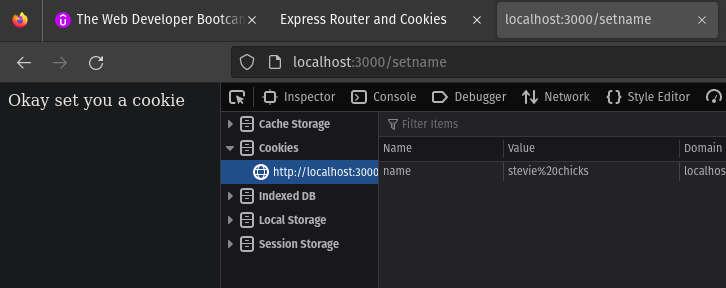

Express Router Intro
- Express comes with different way of writing our routes, slightly different structure then what we
have been using.
- We can write all of our route in a single file directly on app.js, it works but in large app with
lots of routes that can be a very very long file difficult to organize, just not how we want to
create a real application.
- So express comes with a function called Router
- It creates a new Router object for us.
- Using Router we can group similar routes and put them in separate file and it reduces repitition of
common part of route
- /dogs
POST /dogs
/dogs/:id
/dogs/:id/breed
- We are going to make a directory called router and for each similar types of route we are going to
make a js file.
// route/shelter.js
const express = require('express')
const router = express.Router() // making an empty router
router.get('/shelters', (req, res) => { // here we are adding four different routes
res.send("All Shelters")
})
router.post('/shelters', (req, res) => {
res.send("Creating Shelter")
})
router.get('/shelters/:id', (req, res) => {
res.send("One Shelter")
})
router.get('/shelters/:id/edit', (req, res) => {
res.send("Editig a Shelters")
})
module.exports = router
- Now in out index.js file we can require that
// index.js
const express = require('express')
const app = express()
const shelterRoutes = require('./route/shelter')
// now using the required routes
app.use('/',shelterRoutes) // take all routes from router and apply to our app and here prefix them with nothing.
// now all the route works
app.listen(3000,(req,res)=>{
console.log("Listening on port 3000");
})
- adding prefix /shelters to all routes
// index.js
app.use('/shelters',shelterRoutes)
// now we have to edit the shelter.js file
// shelter.js
const express = require('express')
const router = express.Router() // making an empty router
router.get('/', (req, res) => { // here we are adding four different routes
res.send("All Shelters")
})
router.post('/', (req, res) => {
res.send("Creating Shelter")
})
router.get('/:id', (req, res) => {
res.send("One Shelter")
})
router.get('/:id/edit', (req, res) => {
res.send("Editig a Shelters")
})
module.exports = router
Express Router and Middleware
- We can also add middleware to all the routes in a particular router.
- If we will define our middleware in index.js it will be applied to all routes rather than a
particular group of routes.
// admin.js
const express = require('express')
const router = express.Router()
router.use((req, res, next) => { // this middleware will work on every single
if (req.query.isAdmin) { // checking for isAdmin query
next()
}
res.send("Sorry not an Admin!!")
})
router.get('/topsecret', (req, res) => {
res.send('this is top secret.')
})
router.get('/deleteeverything', (req, res) => {
res.send('Ok deleted it all!')
})
// let say we want to protect these two routes with some middleware
// every route in here is going to use above middleware
module.exports = router
// index.js
const express = require('express')
const app = express()
const shelterRoutes = require('./route/shelter')
const adminRoutes = require('./route/admin')
app.use('/shelters', shelterRoutes)
app.use('/admin', adminRoutes)
app.listen(3000, (req, res) => {
console.log("Listening on port 3000");
})
Sending Cookies
- Now we are going to see how we can use express to set a cookie and also how parse a cookie on coming
request.
- express cookie docs
⇗
// sending a cookie
const express = require('express')
const app = express()
app.get('/greet', (req, res) => {
res.send('Hey there')
})
app.get('/setname', (req, res) => {
// we are not going to ask a user for a name
// instead we are give a static name and add it to the cookie using res.cookie()
res.cookie('name', 'stevie chicks') // this is a part of a response
// res.cookie('animal','harley shrimp') // sending two cookie
res.send('Okay set you a cookie')
})
app.listen(3000, () => {
console.log('Listening on port 3000!');
})

- Now we are going to see how we can understand those cookies and parse them so that we can use them.
Cookie Parser Middleware
- we find the send cookies in 'req.cookies' on the incoming request.
- Express parses it and turns it into an object.
- Unfortunately express doesnot have this functionality in built. So we need to install a package
called cookie parser.
- NPM cookie-parser ⇗
const express = require('express')
const app = express()
const cookieParser = require('cookie-parser')
app.use(cookieParser()) // now in every incoming request we have property called 'req.cookies'
app.get('/greet', (req, res) => {
const { name = 'anonymous' } = req.cookies
res.send('Hey there ' + name)
})
app.get('/setname', (req, res) => {
res.cookie('name', 'stevie chicks')
res.send('Okay set you a cookie')
})
app.listen(3000, () => {
console.log('Listening on port 3000!');
})
- Next we are going to talk about signing cookies